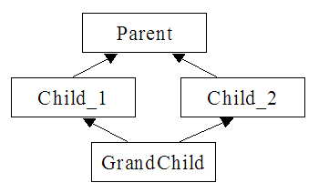

Версія 7. Множинне успадкування класів. Абстрактні базові класи. Віртуальні класи. Діаграма класів, кооперацій.
Мета:
- вивчити особливості використання множинного успадкування. Скласти програму, включивши в неї віртуальні класи.
Теоретичні відомості
Чисто віртуальна функція. Абстрактний клас.
Чисто віртуальна функція - це віртуальна функція, яка немає реалізації, тобто ініціалізується нулем. Базовий клас, який включає такі функції, називається абстрактним базовим класом. Абстрактні класи призначені забезпечити інтерфейс з іншими класами, не розкриваючи подробиці реалізації. Об’єкти абстрактних класів не існують, тому спроба створити такий об’єкт викликає синтаксичну помилку. Усі чисто віртуальні функції треба обов’язково перевизначати в похідних класах.Формат оголошення чисто віртуальної функції:
virtual тип_значення_що_повертається ім’я_функції(параметри)=0;
Правила використання абстрактних класів:
- Абстрактним може бути тільки базовий клас.
- Не можна створити об'єкти абстрактного класу.
- Можуть використовуватися для оголошення покажчиків, які далі використовуються для роботи з об’єктами похідних класів.
- Абстрактний клас не можна використовувати у явному перетворенні типів.
- Абстрактний клас не може використовуватись у якості типу аргументу функції або типу значення, що повертається.
- Похідний клас, у якому чисто віртуальна функція не перевизначена, є абстрактним.
- Не допускається безпосередній виклик чисто віртуальної функції.
- Необхідно перевизначити всі чисто віртуальні функції.
Віртуальні класи
При множинному спадкуванні можливі ситуації, коли похідний клас GrandChild успадковує декілька екземплярів одного базового класу Parent через інші класи Child_1, Child_2.|  |
Порядок виклику конструкторів:
- Iнiцiалiзацiя елементiв даних здiйснюється в порядку, що визначається списком iнiцiалiзацiї конструкторiв похiдного класу.
class derived:public base1, public base2,public base3
{...........;
derived(......):base2(.....),base1(.......); // список iнiцiалiзацiї конструкторiв
....};
- Конструктори базових класiв завжди викликаються перед конструктором похiдного класу.
- Конструктори базових класiв, явно не вказанi у списку iнiцiалiзацiї, викликаються пiсля базових конструкторiв, що явно ініціалізуються, в тому порядку, у якому вони вказанi при оголошеннi класу.
Конфлікт імен
- Якщо декілька базових класів мають елементи даних з однаковими іменами, то виникає неоднозначність при використанні таких елементів.
- Компілятор виявляє ситуації використання імен, визначених більш ніж у одному базовому класі та, якщо виникає конфлікт імен, то видає повідомлення “member is ambiguous...” (“неоднозначний елемент...”).
- Для ліквідації конфлікту імен необхідно використовувати оператор розширення області видимості :: з вказівкою класу, до якого належить відповідне ім'я.